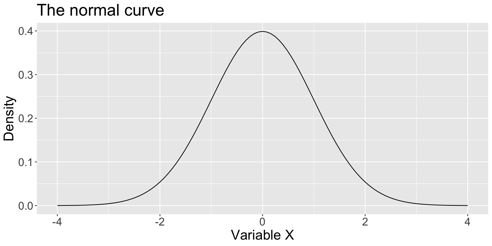
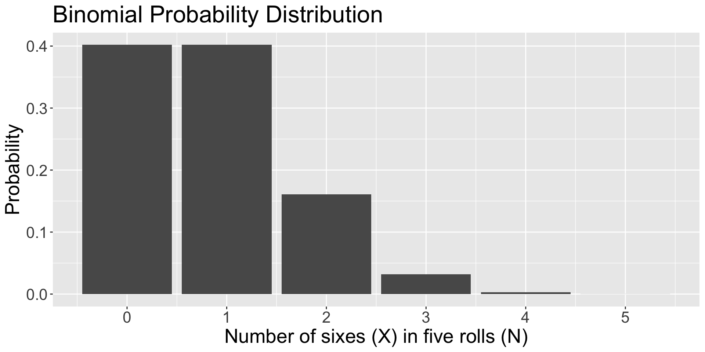
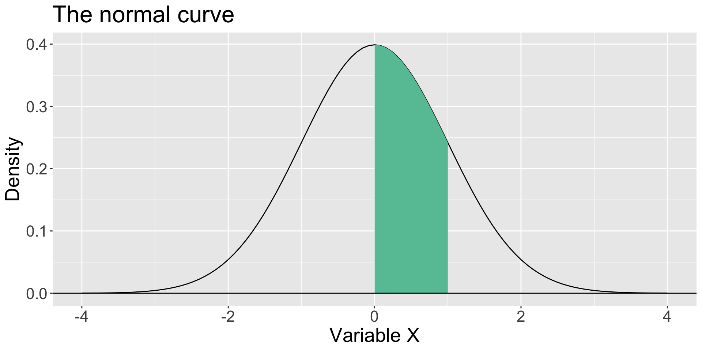
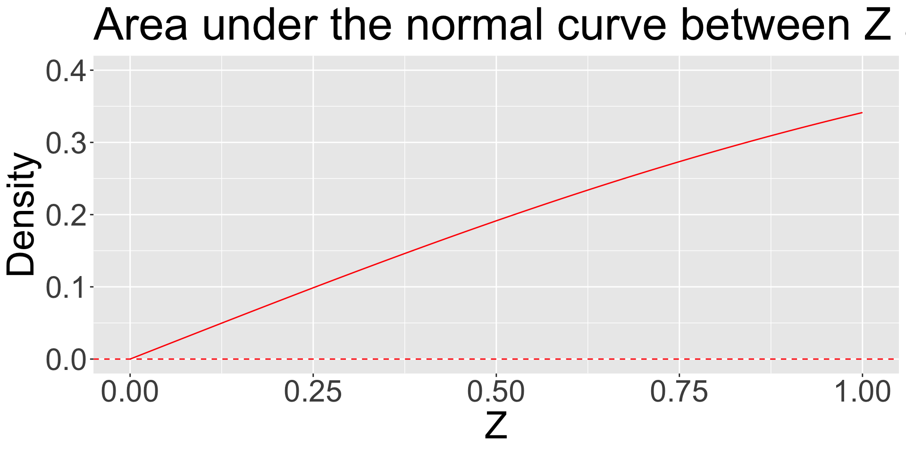
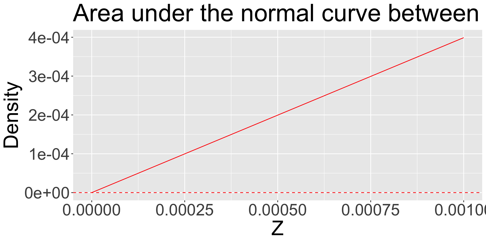

Normal Distributions
Last time…
the binomial distribution
Four assumptions?
- Two elementary events per trial
- The probability for success is the same on each trial
- Trials are independent of one another
- The number of trials is known and fixed
Probability mass function
Today…
- The normal distribution
- Why the normal is so important
- \(t\), \(F\), and \(\chi^2\) distributions (briefly, for now)
The normal distribution (“bell curve” or “Gaussian distribution”) is a two-parameter distribution defined by the mean ( \(\mu\) ) and standard deviation ( \(\sigma\) ) and having the following probability density function:
\[p(X|\mu, \sigma) = \frac{1}{\sqrt{2\pi\sigma}}exp[-\frac{(X-\mu)^2}{2\sigma^2}]\]
\[X\sim N(\mu,\sigma)\]
Expected value
The expected value of the normal distribution is quite easy.
\[E(X) = \mu\]
\[Var(X) = \sigma^2\]
The probability density function gives the height of the curve at a particular value for X.
Although these values communicate information about probability or likelihood, they are not probabilities.
Code

\[\small p(X|\mu, \sigma) = \\ \frac{1}{\sqrt{2\pi\sigma}}exp[-\frac{(X-\mu)^2}{2\sigma^2}]\]
Probability Density
Code
data.frame(num = 0:5, p = dbinom(x = 0:5, size = 5, prob = 1/6)) %>% ggplot(aes(x=num, y=p)) + geom_bar(stat="identity") + scale_x_continuous("Number of sixes (X) in five rolls (N)", breaks=c(0:5)) +scale_y_continuous("Probability")+ggtitle("Binomial Probability Distribution")+
theme(text = element_text(size = 20))
\[\small P(X|\theta,N) = \\\frac{N!}{X!(N-X)!}\theta^X(1-\theta)^{N-X}\]
Probability Mass
Both the normal distribution and the binomial distribution follow the Law of Total Probability, but in different ways.
In the binomial distribution, each outcome in the sample space has a probability and these probabilities sum to 1.
In the normal distribution, there are an infinite number of values, each having a probability of 0, but the probability that some value will occur is 1. The area under the curve is 1.
The density values are derived to insure that the area under the density curve is 1. They have no inherent meaning beyond that.
Density is mass per volume. In this context (curve in two dimensions) density is mass per area. The total density in the normal curve is 1.
The density for a part of the curve (a smaller area) will necessarily be less than 1.
The area under the curve that lies between the mean (here 0) and a value of 1 is the probability of a score between 0 and 1.
As we shrink that area by moving X closer to the mean, that probability interpretation holds.
Code
ggplot(data.frame(x = seq(-4, 4)), aes(x)) +
stat_function(fun = function(x) dnorm(x)) +
stat_function(fun = function(x) dnorm(x) ,
xlim = c(0, 1),
geom = "area", fill = colors[1]) +
geom_hline(aes(yintercept = 0))+
scale_x_continuous("Variable X") + scale_y_continuous("Density")+ggtitle("The normal curve") + theme(text = element_text(size =20))
As our interval shrinks closer and closer to 0, our area (probability) shrinks as well.
It can get vanishingly close to 0—essentially a point rather than an area.
The probability of that “point” is 0.
Code
ggplot(data.frame(x = seq(0, 1)), aes(x)) +
stat_function(fun = function(x) pnorm(x)-.5, color = "red") +
geom_hline(aes(yintercept = 0), color = "red", linetype = "dashed")+
scale_x_continuous("Z") +
scale_y_continuous("Density", limits=c(0,.4)) +
ggtitle("Area under the normal curve between Z and 0") +
theme(text = element_text(size = 30))
We can keep shrinking the distance between Z and 0, never reaching 0, and still calculate an area.
It will be very, very small.
Code
ggplot(data.frame(x = seq(0, .001, by =.00005)), aes(x)) +
stat_function(fun = function(x) pnorm(x)-.5, color = "red") +
geom_hline(aes(yintercept = 0), color = "red", linetype = "dashed")+
scale_x_continuous("Z") +
scale_y_continuous("Density") +ggtitle("Area under the normal curve between Z and 0")+ theme(text = element_text(size = 30))
Characteristics of the normal distribution
The mean and standard deviation are independent
The distribution is unimodal and symmetrical.
For two normal distributions, the area under the curve between corresponding locations in standard deviation units is the same regardless of \(\mu\) and \(\sigma\).
- For example, 68.3% of the area under a normal curve falls between 1 \(\sigma\) below the mean and 1 \(\sigma\) above mean—for every normal curve. This general characteristic is called the Empirical Rule.
Code
ggplot(data.frame(x = seq(-4, 4)), aes(x)) +
stat_function(fun = function(x) dnorm(x, mean = 0, sd = 2)) +
stat_function(fun = function(x) dnorm(x, mean = 2, sd = .2), color = "blue") +
stat_function(fun = function(x) dnorm(x, mean = -1.25, sd = 1), color = "red") +
scale_x_continuous("Variable X") +
scale_y_continuous("Density") +
ggtitle("Normal Curves")All of these distributions are normal and have an equivalent area (proportion) that falls between a standard deviation below and above their respective means.
Code
p1 = ggplot(data.frame(x = seq(-4, 4)), aes(x)) +
stat_function(fun = function(x) dnorm(x, mean = 0, sd = 2) ,
xlim = c(0-2, 0+2),
geom = "area", fill = colors[1]) +
stat_function(fun = function(x) dnorm(x, mean = 0, sd = 2)) +
geom_hline(aes(yintercept = 0)) +
scale_x_continuous("Variable X") +
scale_y_continuous("Density", limits = c(0,2))+
ggtitle("Area under the normal curve") +
theme(text = element_text(size = 25),
plot.title = element_text(size = 18))
p2 = ggplot(data.frame(x = seq(-4, 4)), aes(x)) +
stat_function(fun = function(x) dnorm(x, mean = 2, sd = .2) ,
xlim = c(2-.2, 2+.2),
geom = "area", fill = colors[1]) +
stat_function(fun = function(x) dnorm(x, mean = 2, sd = .2)) +
geom_hline(aes(yintercept = 0)) +
scale_x_continuous("Variable X") +
scale_y_continuous("Density", limits = c(0,2))+
ggtitle("Area under the normal curve")+
theme(text = element_text(size = 25),
plot.title = element_text(size = 18))
p3 = ggplot(data.frame(x = seq(-4, 4)), aes(x)) +
stat_function(fun = function(x) dnorm(x, mean = -1.25, sd = 1) ,
xlim = c(-1.25-1, -1.25+1),
geom = "area", fill = colors[1]) +
stat_function(fun = function(x) dnorm(x, mean = -1.25, sd = 1)) +
geom_hline(aes(yintercept = 0)) +
scale_x_continuous("Variable X") +
scale_y_continuous("Density", limits = c(0,2))+
ggtitle("Area under the normal curve")+
theme(text = element_text(size = 25),
plot.title = element_text(size = 18))
ggarrange(p1, p2, p3, ncol = 3)Approximately 68% of the data in a normal distribution will be within one standard deviation of the mean.
- About 95% of the data will be within two standard deviations of the mean.
- About 99.7% of the data will be within three standard deviations of the mean.
In other words, nearly all of the data will fall within 3 standard deviations of the mean in a normal distribution.
These benchmarks are convenient for determining if a score (and later, a mean) is rare or unusual in the context of a particular distribution.
Standard normal distribution
The normal distribution with \(\mu\)=0 and \(\sigma\)=1 is called standard normal.
Variables with quite different means and standard deviations can be standardized so that they can be compared in the same metric (standard deviation units). This allows statements such as “relative to the mean, I am more conscientious (e.g., \(Z=2\)) than I am extraverted (e.g., \(Z=1\)).”
I could not say, however, that I am twice as conscientious as I am extraverted.
All continuous distributions can be standardized, but if they are not normal to begin with, standardization will not make them so. Standardization does not alter distribution shape.
Standard normal distribution
There is only one (1) standard normal distribution.
How is this useful?
Given any score, we can calculate the probability of getting a value greater than that z-score. (Or less than that z-score.)
Given any two z-scores, we can calculate the probability of getting a value between these scores. (Or outside those z-scores)
Given a probability \(p\), we can identify the z-score at which the proportion of scores below (or above) \(p\) falls.
Given a probability \(p\), we can identify the z-score at which the proportion of scores that fall above \(-Z\) and below \(Z\) is equal to \(p\).
Example
What’s the probability of getting a z-score smaller than 1.2?
Code
Example
What’s the probability of getting a score smaller than 68 when the mean of the distribution is 72 and the variance is 8?
Code
ggplot(data.frame(x = seq(62, 81)), aes(x)) +
stat_function(fun = function(x) dnorm(x, m = 72, sd = sqrt(8)) ,
xlim = c(62, 68),
geom = "area", fill = colors[1]) +
stat_function(fun = function(x) dnorm(x, m = 72, sd = sqrt(8))) +
geom_hline(aes(yintercept = 0)) +
scale_x_continuous("z-score") +
scale_y_continuous("Density")+
theme_pubr()In a distribution with mean 32 and standard deviation 4, what score corresponds to the 80th percentile?
What’s the likelihood of a score falling between X = 2 and x = 7 when the mean = 3 and the standard deviation is 2?
Sampling distributions are normal
One of the most important discoveries in statistics is that the sampling distributions of many statistics are approximately normal even when the sample (and population) distributions are not.
The sampling distribution of a statistic is the probability distribution that specifies probabilities for the possible values that the statistic can take.
- For example, the mean of a random sample will not precisely equal the population mean. But, how far off will it be? And what distribution shape will these possible sample mean values have?
The error represented by how far off a sample mean is from the population mean is called sampling error.
Central limit theorem
According to the central limit theorem, as sample size increases, the sampling distribution of the mean approaches normality, even when the data upon which the mean is based are not normally distributed.
The sample size necessary to be “approximately normal” depends on the nature of the underlying data. The less normal it is, the larger the sample size necessary in order for the sampling distribution of the means to become normal.
“Around sample size of 30” is a common rule of thumb.
- Note, however, that this rule of thumb is sufficiently only to assume that the sampling distribution is normal. This makes no assumptions about statistical power.
The standard deviation of the sampling distribution of the means is called the standard error of the mean. It is directly related to the variability of the underlying data:
\[\sigma_{mean} = \frac{\sigma_X}{\sqrt{N}}\]
The same benchmarks for “rarity” that exist for normally distributed data also exist for normally distributed means. This is the basis for much statistical inference.
What if we don’t know \(\mu\) or \(\sigma\)? What if we want to understand the sampling behavior of the variance rather than the means?
If we can assume the data are normally distributed, then other distributions can be used to address these additional questions.
The \(t\) distribution, like the normal, is unimodal and symmetrical. It has a single parameter, \(\nu\), called the degrees of freedom (related to the sample size, \(N\)).
If a sample of size, \(N\), comes from a normal distribution with unknown \(\sigma\), then the data will follow a \(t\) distribution.
The sampling distribution of the mean will also follow a \(t\) distribution.
The \(t\) distribution is used when data are normally distributed but we do not know the population mean or standard deviation.
This must be estimated from the sample and the added uncertainty produces a distribution with heavier tails. As sample size increases, the \(t\) distribution converges on the normal distribution.
Code
ggplot(data.frame(x = seq(-4, 4)), aes(x)) +
stat_function(fun = function(x) dnorm(x),
aes(color = "Normal", linetype = "Normal")) +
stat_function(fun = function(x) dt(x, df = 1),
aes(color = "t(1)", linetype = "t(1)")) +
stat_function(fun = function(x) dt(x, df = 5),
aes(color = "t(5)", linetype = "t(5)")) +
stat_function(fun = function(x) dt(x, df = 25),
aes(color = "t(25)", linetype = "t(25)")) +
stat_function(fun = function(x) dt(x, df = 100),
aes(color = "t(100)", linetype = "t(100)")) +
scale_x_continuous("Variable X") +
scale_y_continuous("Density") +
scale_color_manual("",
values = c("red", "black", "black", "blue", "blue")) +
scale_linetype_manual("",
values = c("solid", "solid", "dashed", "solid", "dashed")) +
ggtitle("The Normal and t Distributions") +
theme(text = element_text(size=20),legend.position = "bottom")
Sometimes our interest will be in variability rather than means. We can make use of the \(\chi^2\) distribution here. It has a single parameter, \(\nu\), related to the sample size, \(N\). There is an important relationship between the normal distribution and the \(\chi^2\) distribution:
\[\text{If } Z \sim N(0,1), \\\text{then }Z^2 \sim \chi^2_1 \\\text{ and } \sum_{i=1}^{N}Z^2 \sim \chi^2_N\]
In other words, the sum of squared standard normal variables will have a \(\chi^2\) distribution. Therefore, we can also assume that variance is \(\chi^2\) distributed.
Another common question is related to comparing multiple variances. Suppose we conduct an experiment that has four different conditions. We expect that the means for these conditions will be different, but how can we know if they are different enough to claim that it is due to our experiment and not just random variability?
| Condition 1 | Condition 2 | Condition 3 | Condition 4 |
|---|---|---|---|
| \(M_1\) | \(M_2\) | \(M_3\) | \(M_4\) |
| \(SD_1\) | \(SD_2\) | \(SD_3\) | \(SD_4\) |
One approach to this question would start by taking the variability of the means, that is, variability between conditions:
\[\large s^2_{\text{between}}\]
\[\Large s^2_{\text{between}}\]
This variability will include any that was produced by the experimental conditions as well as any random variability. We have no way of separating those two parts. How can we know if the experiment-induced part is “big enough” to claim that the experiment “worked?”
| Condition 1 | Condition 2 | Condition 3 | Condition 4 |
|---|---|---|---|
| \(M_1\) | \(M_2\) | \(M_3\) | \(M_4\) |
| \(SD_1\) | \(SD_2\) | \(SD_3\) | \(SD_4\) |
We could compare it to the variability of the individual scores within the conditions:
\[\large s^2_{\text{within}}\]
Within each group, everyone is exposed to the same experimental conditions and so the only source of variability is random variability.
The two variances are in different metrics (means versus scores), but that can be taken care of by the following relation:
\[\sigma_{\text{mean}} = \frac{\sigma_X}{\sqrt{N}}\]
\[s^2_{\text{means}} = \frac{s^2_{\text{scores}}}{N}\]
\[Ns^2_{\text{means}} = s^2_{\text{scores}}\]
In other words, if the null hypothesis (no mean differences) is true, then both of these variance estimates are estimates of random error. If their ratio departs enough from 1.00, then I can claim there is something extra in the between source—the contribution due to the experimental conditions.
The ratio \(F\) is distributed:
\[F \approx \frac{Ns^2_{\text{between}}}{s^2_{\text{within}}}\]
Each variance estimate in the ratio is \(\chi^2\) distributed, if the data are normally distributed. The ratio of two \(\chi^2\) distributed variables is \(F\) distributed. Eventually we will need to make this more precise (adjust by degrees of freedom), but this is close enough for now.
\[F_{\nu_1\nu_2} = \frac{\frac{\chi^2_{\nu_1}}{\nu_1}}{\frac{\chi^2_{\nu_2}}{\nu_2}}\]
The \(t\), \(\chi^2\), and \(F\) distributions all depend on the normal distribution assumption. The normal distribution is the “parent” population.
As sample size increases, \(t\) and \(\chi^2\) converge on the normal. \(F\) converges on :
\[\frac{\chi^2_{\nu_1}}{\nu_1}\]
with the numerator depending on the normal.
But keep in mind
These probability distributions have a key assumption:
- the sample is a random selection from the population
If the sample is not a random selection, the rules of probability don’t apply.
Hmmm, it may make some sense to talk about methods of random sampling and how the concept of samples informs the theory behind inferential statistics…
Next time…
sampling!
Don’t forget to complete Journal 4 and submit your homework by 9am tomorrow!